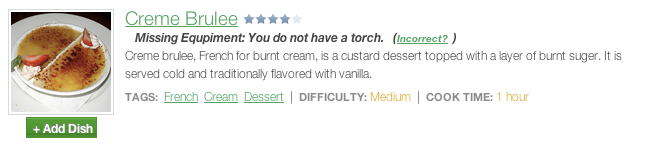
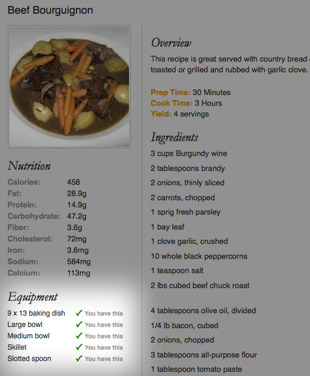

Equipment Helper
Soirée keeps track of your kitchenware
Soirée's will point out when you're missing the tools to cook
a recipe.
Since the user has entered their kitchen level and equiptment availability into the
system during the customization process, Soirée knows when a recipe may need more
than the kitchen supports. This allows the user to either choose a different recipe or plan to acquire the equpiment.

